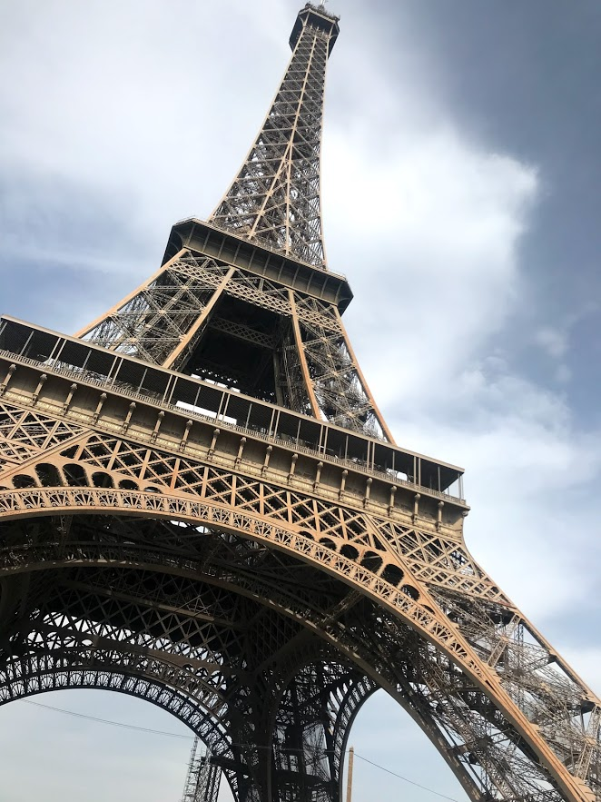
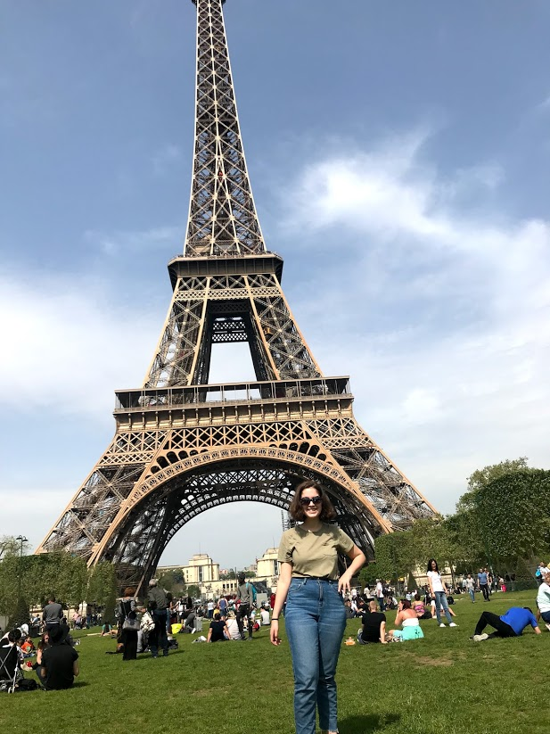
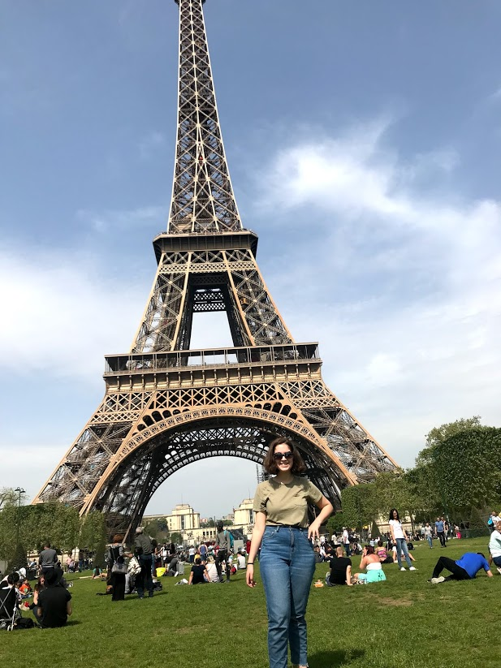
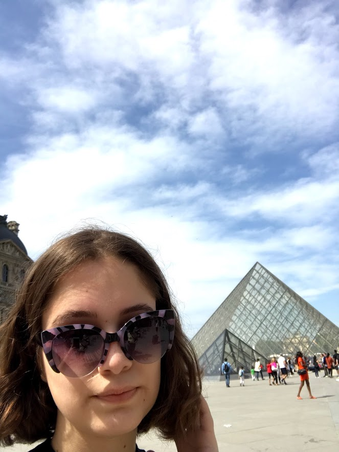
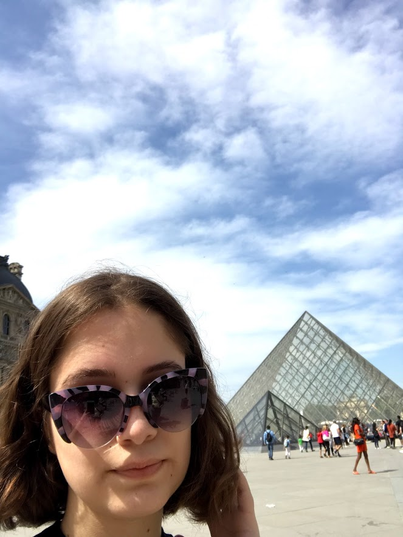

- Homepage
- All About Me!
- France
- The Netherlands
All About France!
My family and I went to France this past April to celebrate my 16th birthday as well as to celebrate my parents 20th anniversary. Throughout our time, my family stayed in an apartment in Paris. For the first few days of our vacation, my family had a hard time with doing activites such as ordering food. Nobody in my family speaks French, so we had to all download translator apps to get us through the week.
Popular Destinations In Paris: Destinations I Totally Recommend & Rates
During my vacation, I got to go to multiple popular destinations throughout Paris. Here are my recommendations and ratings; don't take them so seriously.
The Eiffel Tower, Rate:8.5
Normally when people visit Paris, one of the first places they visit is the Eiffel Tower. My family, however, didn't visit this site until one of our last days. When I first got off the metro at the stop, I was in awe of the landmark. I didn't realize how big it was. Let me tell you, THE EIFFEL TOWER IS MASSIVE!!! Also the traffic around the landmark was light compared to sites in New York City. The only problem that my family and I had were the prices to step on the tower. The prices for the Eiffel Tower are determined by whether you want to go to the top of the tower or the first floor as well as if you want to walk or take an elevator up the tower. My family decided to not go up the tower and we still took some great pictures of this site.
 

The Louvre, Rate:9
"Paris, I Louvre you"- my friend Tatiana's Instagram caption

Description
The Lourve is the world's largest and most popular art museum in the world. It's located in Paris, France, next to the right bank of the Seine River. The Louvre houses over 38,000 objects from prehistory to the 21st century. The museum opened on August 10th, 1793 inside the Lourve Castle. This museum hosts many timeless
My family and I went to the Lourve on Easter. We thought it was a great idea because normally no one in America goes out to the museums on major holidays like this. It wasn't really that good because none of us realized that a lot of history is in the museum. The place is split up into different time periods, from Prehistory to 21st Century. I would recommend the Lourve as an all-day event because we walked around for 4 hours and only got to a quarter of the museum.

 

The "Mona Lisa", The Lourve, Rate:7

Description: The "Mona Lisa" is a half-length portrait painting by Leonardo Da Vinci. This portrait has been described as "...the most visited piece of art in the world". I can understand why it is. The woman in the painting seems to be Lisa Gherardini, the wife of Francesco del Giocondo. The portrait is believed to have been painted between 1503 and 1506. "Mona Lisa" has been on display in The Lourve (see above) since 1797.
My View: The Mona Lisa is just a tad bit overhyped, just a little. This portrait is located in a seperate room in the Catholic wing of the Museum. If you're claustrophobic, I would not go in, the room is normally filled with tourists trying to get to the front to take a selfie with the famous portrait. Like any place in a popular city, the people in line are tourists who are tired and rude. Other people tried taking my spot in front and I didn't care to put them in their places. This view is a little more personal, if you don't care be my guest and go to the Mona Lisa.